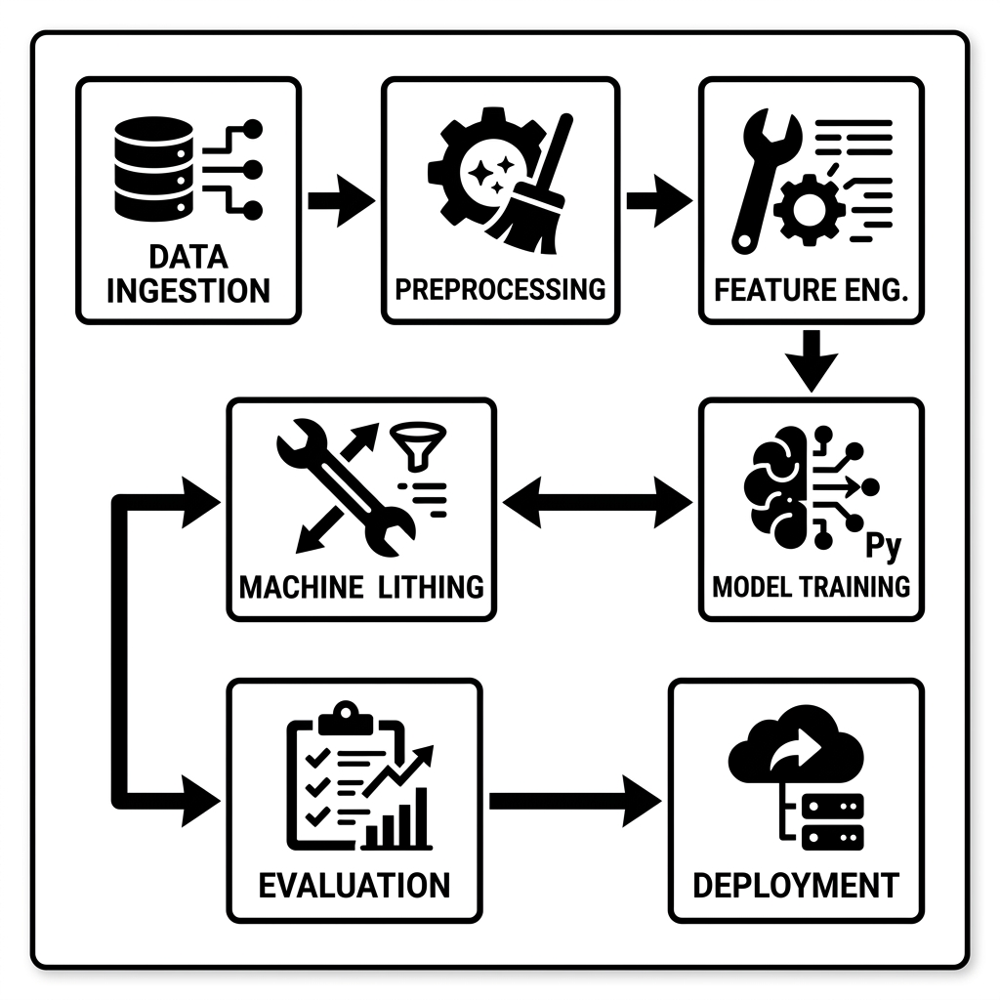
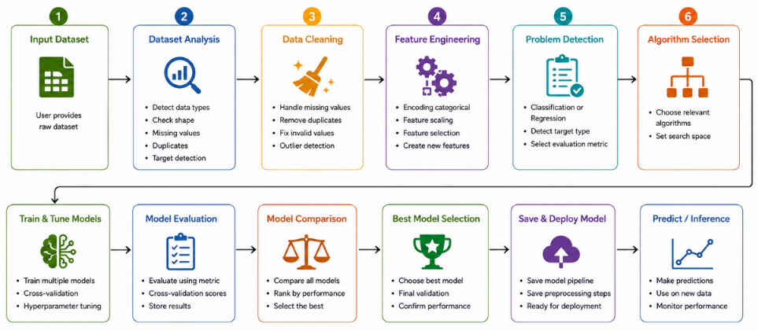
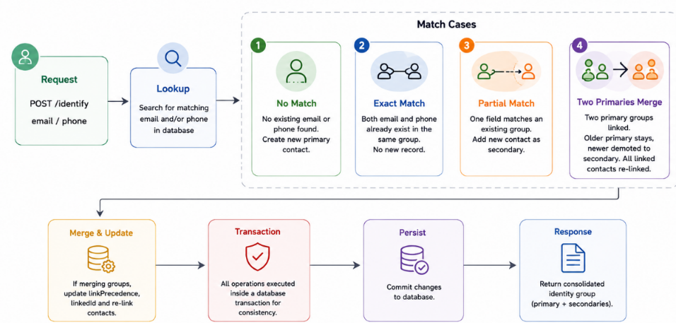
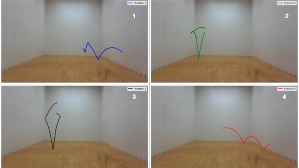
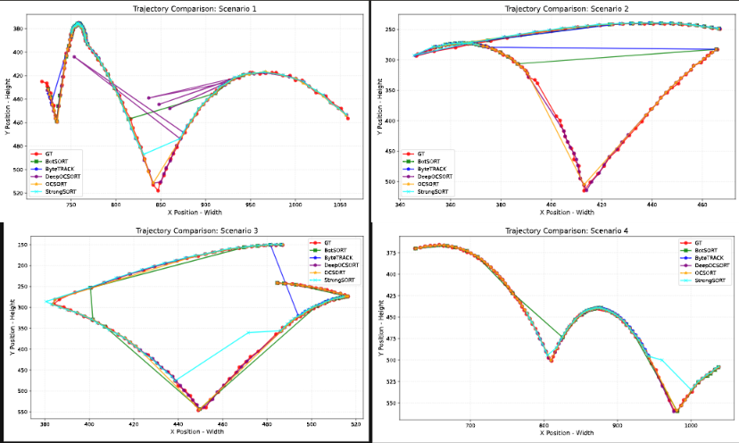
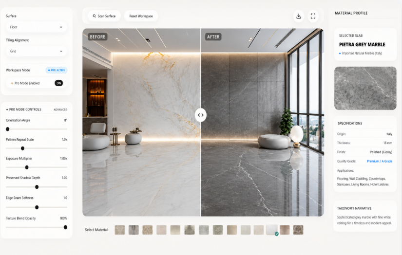

Final-year B.Tech (AI/ML) student at NIMS University who ships measurable, production-oriented systems — spanning computer vision, NLP/RAG, and agentic LLM tool-calling. National Finalist in QuizOff 2026.
Jaipur, Rajasthan, India
+91 9304277935


The Agentic AutoML Framework takes a raw dataset and automatically executes the entire machine-learning pipeline with minimal manual intervention. The intelligent workflow seamlessly handles Dataset Analysis, Cleaning, Feature Engineering, and Algorithm Selection. It trains and evaluates multiple candidate models, automatically identifies the best performer, and saves the complete pipeline for immediate deployment and prediction.
The Identity Reconciliation Service is an automated backend API that identifies and consolidates customer identities across varying email and phone combinations. Built with Node.js, Express, and Prisma ORM, it exposes a POST /identify endpoint that intelligently processes incoming contacts. It maintains primary and secondary relationships, and safely merges conflicting identities using database transactions to ensure data consistency.

Built using Node.js, Express, Prisma ORM, and SQLite, the service exposes a POST /identify API that analyzes incoming contact information and handles new identities, exact matches, partial matches, and conflicts between previously separate customer groups.
The system maintains primary and secondary contacts, automatically merges conflicting identities by keeping the older primary record, and re-links associated secondary contacts. Database transactions are used during merges to ensure data consistency.


The Kalman Filter Multi-Object Tracker is a real-time system that detects and maintains track of multiple objects across video frames. Even when detection is noisy or temporarily missing, the system predicts where each object will move using a mathematical state estimation filter.
The tracker automatically creates new tracks when objects appear and continuously predicts positions during occlusions. It is benchmarked against the One Euro Filter, demonstrating superior handling of jitter and missed detections.

UmaTraderss (umatraderss.com) is a luxury e-commerce & web application built for premium Makrana marble and tiles. To connect customers seamlessly to luxury products, a real-time AI-powered room visualizer is integrated into the web application. The system also features multi-room selection enabling customers to preview flooring across living halls, bedrooms, kitchens, and bathrooms.